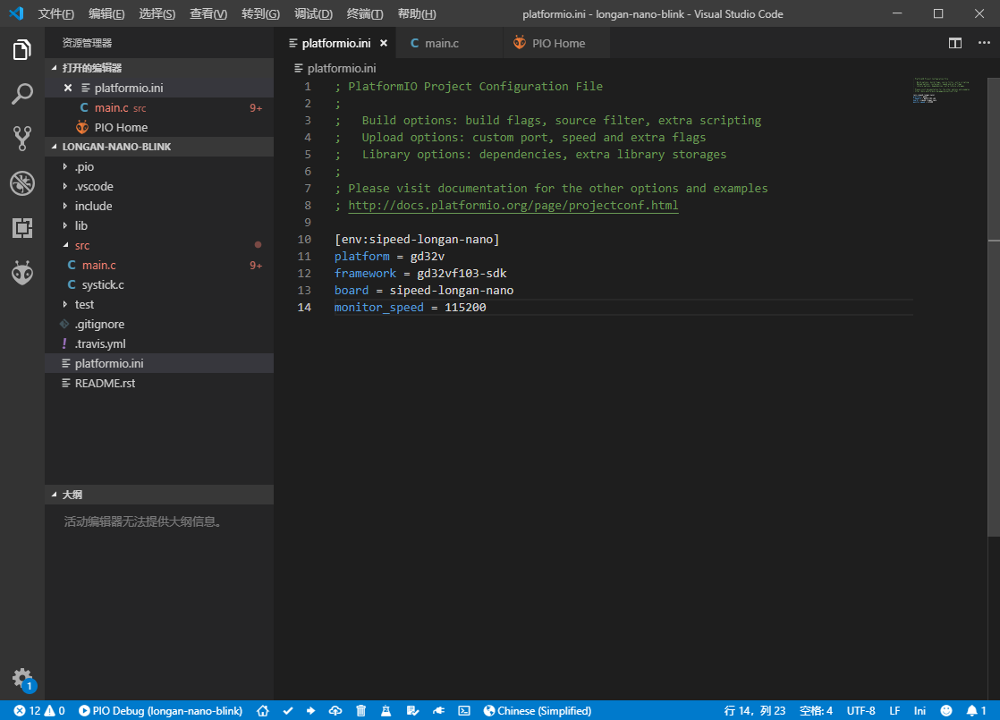

Getting to Blinky
Create a LED Blink project
- Open the PIO home page selection
Project Examples

- Select
arduino blinkClickImportImport sample program (first need to download the schema file and import tool, It may take long time to download)

- You can see the sample project after the import is successful.

Project configuration file
- We first need to edit the configuration file works
platformio.iniaccording to their own development board model, delete the other development board environmen.

Configuration example
[env:sipeed-longan-nano]
platform = gd32v ;Platform, choose gd32v
framework = arduino ;Optional gd32vf103-sdk or arduino
board = sipeed-longan-nano ; Development board
monitor_speed = 115200 ; Serial monitor baudrate
upload_protocol = serial ; Download tool Default serial port, optional jlink, gd-link, dfu, etc.
debug_tool = jlink ; Debugging tool default jlink, optional sipeed-rv-debugger, etc.
PIO can implement setting macro definitions in the configuration file, control custom functions such as compilation process, etc. For advanced usage, please refer to PIO official documentation.
One-click compilation
Click on the lower left corner Build to build the project
Connect to the development board
Serial ISP download
- Prepare the USB to serial downloader
- Connect development board and downloader
- Modify the
platformio.inifile and add the following line:upload_protocol = serial - Development board hold down the
BOOTkey, then press theRESETbutton to restart development board and then release theBOOTbutton to enter download mode development board.
JTAG download
- Prepare J-link or Sipeed RV Debugger
- Connection development board
- Modify the
platformio.inifile, add the following line:
orupload_protocol = jlinkupload_protocol = sipeed-rv-debugger
USB DFU download
- If using it for the first time then you need to install libusb driver, please refer to this guide using Zaidig install the driver.
- Prepare the USB Type-C cable
- Use a data cable to connect development board to your computer.
- Modify the
platformio.inifile, add the following line:upload_protocol = dfu - Development board hold down the
BOOTkey, then press theRESETbutton to restart development board and then release theBOOTbutton to enter DFU mode.
One click download
After selecting the download method according to the above steps, you can use the PIO built-in tool to download it with one click.
Click on the lower left corner Upload to upload the program to the development board.
Install drivers using Zadig
PIO has a built-in dfu-util download tool. To use this tool, you need to install the libusb driver for the development board. (Note: different from GD official driver)
It is recommended to install the winusb driver via Zadig. download link
Open Zadig after successful download
Select GD32V in the drop-down bar, replace the driver with WinUSB, click the Replace button, and the replacement will succeed.

USB DFU download
Download the DFU tool：http://dl.sipeed.com/LONGAN/Nano/Tools/GD32_MCU_Dfu_Tool_V3.8.1.5784_1.rar
Unzip two folders：
GD32 MCU Dfu Drivers_v1.0.1.2316 and GD32 MCU Dfu Tool_v3.8.1.5784
First enter the driver folder, install the corresponding driver file, pay attention to run with administrator privileges
Run GD32 MCU Dfu Tool.exe Insert Longan Nano into the computer, press and hold the Boot0 key, short press the Reset key, then release the Boot0 key, you can see that the GD32VF chip is recognized in the DFU tool.
Select the corresponding firmware file, and check the checksum after burning. Click OK to burn.
After the burning is completed, it will not be reset automatically. You need to manually press the reset button to check the running effect.